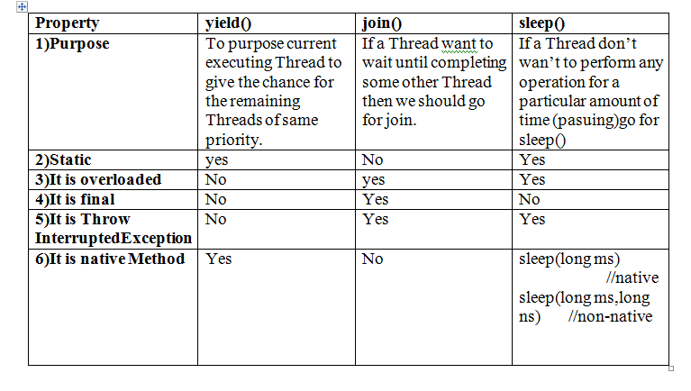
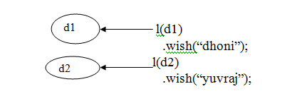

1) Introduction
2)The ways to define instantiate , and a start a thread.
3)Getting and setting name of a thread.
4)Thread priorities.
5)The methods to prevent thread execution.
a)yield()
b)join()
c)sleep
6)Synchronization
7)Inter Thread communication
a)wait();
b)notify
c)notifyall();
8)Deadlock
9)Daemon Threads
Introduction
Multitasking:
Executing several task simultaneously is called Multitasking.There are two types of multitasking.
1)Process based multitasking
2)Thread based multitasking
1)Process based multitasking:
Executing several task simultaneously,where each task is separate independent process is called process
based multitasking.
2)Thread based multitasking:
Executing several task simultaneously, where each task is a separate independent part of the same
program is called Thread based multitasking.
And each independent part is called Thread.
It is best suitable for programmatic level.
Whether it is process based or thread based the main objective of multitasking is to improve
performance of the system by reduces response time.
The main important application areas of multithreading are developing video games, multimedia
graphics,implementing animations.
Java provide inbuilt support for multithreading by introducing a rich API
(Thread, Runnable, ThreadGroup, ThradLocal--) being a programmer we have to know how to use
this API and we are not responsible to define that API. Hence developing multithreading program
is very easy in java when compared with c++.
The Way to define Instantiate and start a new Thread
We can define a thread in the following two ways:
1)By extending thread class.
2)By implementing Runnable Interface.
Defining Thread by implementing Runnable Interface
We acndefine a Thread even by implementing Runnable Interface also.
Runnable Interface present in java.lang package and contains only one method run() method.
approach to define a Thread:
Among the two ways of defining a Thread implements Runnable mechanism is recommended to use.
In first approach, Our class always extending Thread class and hence There is no chance of extending
any other class,but in the second approach we can extend some other class also while implementing Runnable
Interface hence second approach is recommended to use.
Thread class Constructor:
1) Thread t=new Thread();
2) Thread t=new Thread(Runnable r);
3) Thread t=new Thread(Runnable r,String name);
4) Thread t=new Thread(ThreadGroup g ,String name);
5) Thread t=new Thread(ThreadGroup g ,Runnable r);
6) Thread t=new Thread(ThreadGroup g ,Runnable r,String name);
7) Thread t=new Thread(ThreadGroup g ,Runnable r,String name,long stacksize);
Getting and Setting name of the Thread
Every Thread in java has some name.It may be provided by the the programmer or default name generated by JVM.
We can get and set name of a thread by using The following methods of the Thread class.
1) public final String getName();
2)public final String setName(String name);
Note:We can get current executing Thread Referance by using the following method of thread class
Public static Thread currentThread();
Thread priority
Every thread in java has some priority but the range of thread ptiorities is 1 to 10
(1 is least and 10 is highest)
Thread class defines the following constants to define some standard priorities.
1)Thread MIN-PRIORITY 1
2)Thread NORM-PRIORITY 5
3)Thread NORM-PRIORITY 10
4)Thread LOW-PRIORITY //Invalid
5)Thread HIGH-PRIORITY //Invalid
Thread scheduler will use these priority while allocating cpu
The thread ehich is having Highest priority will get chance first.
If two Threads having same priority then we
can't expect exact execution order,it depends onThread Schedular.
Default Priority:
The default priority only for the main Thread is 5.bur for all the remaining Thread
it will be Inheritence from the parent that is whenever the priority parent has the same
priority will be inheriting to the child.
Thread class defines the following two methods to get and set priority of the thread.
1) Public final int getPriority();
2) Public final void setPriority(int p); //The allowed values are 1 to 10 ,otherwise we
will get IllegalAeegumentException
The Methods to prevent Thread Execution
We can't prevent =thread from execution by using the following methods
1) yield()
2) join()
3) sleep()
1)yield():-
yield() method causes to pause current executing Thread for giving the chance to remaining
wating Threads of samePriority
if there are no waiting Threads or all wating Threads low priority Then the same Thread will
continue its execution once again.
1)Signature of yield Method
public static void native void yield()
The Thread which is yielded,when it will get chance one again for execution is decided
by ThreadSchedular and we can't expect exactly.
II) join():
If a Thread want™s to wait until completing some other Thread Then we should go for join().
Example:1)
Vienue fixing(t1) cards printing(t2) cards distributing(t3)
{ { {
t1.join; t1.join;
} } }
Example2)
t1
{
t2.join()
}
If thread t1 executes t2.join() then t1 thread will entered into wating state until t2 completes.
Once t2 complete then t1 will continue its execution.
i)publicfinal void join()throws InterruptedException
ii) public final void join(long ms)throwsInterruptedException
iii) public final void join(long ms,intns)throws InterruptedException
join() is overloaded and every join() throw InterruptedException.hence when error
we are using join() complusary we should handle InterruptedException either by try-catch
or by throws otherwise we will get compiletime error.
iii)Sleep():
If a Thread don™t to perform any operation for a particular amount of time (just pauseing) Then we
should go for sleep()
i) public static void sleep(long ms)throws InterruptedException.
ii) public static void sleep(long ms,int ns)throws InterruptedException.
Whenever we are using sleep() method compulsory we should handle InteruptedException other wise
we will get Compiletime Error.
static:
because sleep method calls thread.sleeps means t.start();
t.start(); t is object it is instance(or)non-static.
Interruption Of Thread
A Thread Can Interrupt another sleeping or waiting Thread.
For this Thread calss defines interrupte()method.
Public void interrupts()
Note:
We may not see the impact of interrupt call immediately.
When ever we are calling interrupt() method.if the target thread is not in sleeping or waiting
state then there is no impact immediately interrupt call will wait until target Thread entered
inyo sleeping or waiting state.once trget thread entered into sleep or wating state the interrupt
call will impact the target thread.
Comparision Between foe yield(),join(),sleep():-

Synchronization
Synchronization is the modifier applicable only for methods and blocks and we
can't apply for classes and variables.
If a mehod or bloch declared or synchronized then at a time only one Thread is allowed to execute that
method or block on the given object.
The main advantage of synchronized keyword is we can resolve data inconsistency problem.
The main limitation of synchronized keyword is it increase waiting time of the Threads and effects
performance of the system .
Hence if there is no specific requirement it™s never recommended to use Synchronized keyword.
Every Object in java has a unique lock Synchronization concept internally implemented by using this lock concept.
When ever we are using Synchronization then only lock concept will come into picture.
If a Thread wants to execute any synchronized method on givem object,first it has to get the lock of that object.
Once a Thread get a lock then it allowed to execute any synchronized method on that object.
Once Synchronized method complete then automatically the lock will be released.
While a Thread executing any Synchronized method on the give object.The remaining Threads are not
allowedto execute any synchronized
method on the given object simultaneously.
But remaining Threads are allowed to execute any non-Synchronized methods.Simulteneously
(lock concept is implemented based on object but not based on method).
Case study:
display d1=new display();
display d2=new display();
synchronizedmethod t1=new synchronizedmethod(d1,Punit);
synchronizedmethod t2=new synchronizedmethod(d2,Dawinderjit);
t1.start();
t2.start();

Eventhough wish() method is synchronized we will get irregular output in this case because
,The Thrads are operating on different objects.
Reason:
Whenever multiple Threads are operating on same object then only Synchronization play the role.
If multiple Threads are operating on multiple objects then there is no impact of synchronization.
Classlevel Lock:
Every class in java has a unique lock.
If a Thread want™s to execute a static Synchronized method then it required classlevel lock.
While a Thread executing a static Synchronized mrthod then the remaining threads are allowed to execute
the following methods simultaneously
1)normal static methods
2)normal instance method
3)Synchronized instance mrthod
Note:
There is no link between object level Lock and class level Lock both are independent of each other.
ClassLevel Lock is different and Object Level Lock is different
Synchronized Block:
If very few lines of code requires Synchronization then it is never recommended to declare entire method
as Synchronized,
wehave to declare those few lines of code inside Synchronized block.
The main advantage of Synchronized block over Synchronized method is it reduces the waiting
time of the threads and improve performance of the system.
Every object in java has unique lock,but a thread can acquire more than one lock at
atime(of course fromdifferent objects)
Inter Thread Communication:
If Threads will communicate with each other by using wait(),notify(),notifyAll() methods.
The Thread which requires updation it has to call wait() method.The Thread which is responsible
to update it has to call notify() method.
With() ,notify ,notifyAll() methods are available in Object class but not in Thread class.
Because Thread are required to call method on any shared Object.
If a Thread wants to call wait(),notify(),notifyAll() methods compulsory the Thread should be
owner of the object.i.e. The Thread has to get lock of that object.i.e.Thr Thrad should be in the Synchronized area.
Hence,we can call wait(),notify(),notifyAll() methods only perform synchronized area otherwise we will get
runtime exception saying IllegalMonitorStateException.
If a Thread class wait(), method it releases the lock immediately and entered into waiting state.Thread realeses
the lock of only current object but not all locks.After calling notify() and notifyAll()
methods Thread releases the lock but may not immediately.Except these wait(),notify(),notifyAll() methods there
is no other case where thread releases the lock.
method Is thread releases lock
yield() No
join() No
sleep() No
wait() Yes
notify() Yes
notifyAll() Yes
notify() Vs.notifyAll()
We can use notify() to notify only one waiting Thread.but which waiting thread notify we
can't expect
exactly all remaining threads have to for the further notification.
But in the case of notifyAll() all waiting threads will be notifying but the threads will be executed one by one.
Note:
On which object we are calling wait(),notify(),notifyAll() we have to get the lock of that object.
DeadLock
If two Threads are waitng for each other forever such type of situation is called DeadLock.
There are no resolution technique for DeadLock,but several prevention techniques are possible.
DeadLock Vs. Starvetion:
In the case of DeadLock waiting never ends.
A long waiting of as Threads which ends at certain point of time is called Starvetion.
Daemon Threads
The Threads which are executing in the background are called Daemon Threads
How to kill Thread:
A Thread can stop or kill anoyher Thread by using stop() method then automatically running Thread will entered
Thread into DeadState. It is a deprecated method & hence not recommended to use.
public void stop();
Suspending & reusing a Thread:-
A Thread can suspend another Thread by using suspend()method.
A Thread can resume a suspend Thread by using resume() method.
But these methods are reprecated methods & hence not recommended to use Threading Phases
Creating Program With Thread priority
Follow the below steps to write program .
Step-1
Create the Class
“Priority.java”. Once you ready then write below code.
OutPut
Creating Program With Thread Synchronize
Follow the below steps to write program.
Step-1
Create the Class
Once you ready then write below code.
OutPut
Download example and run it on Netbeans IDE